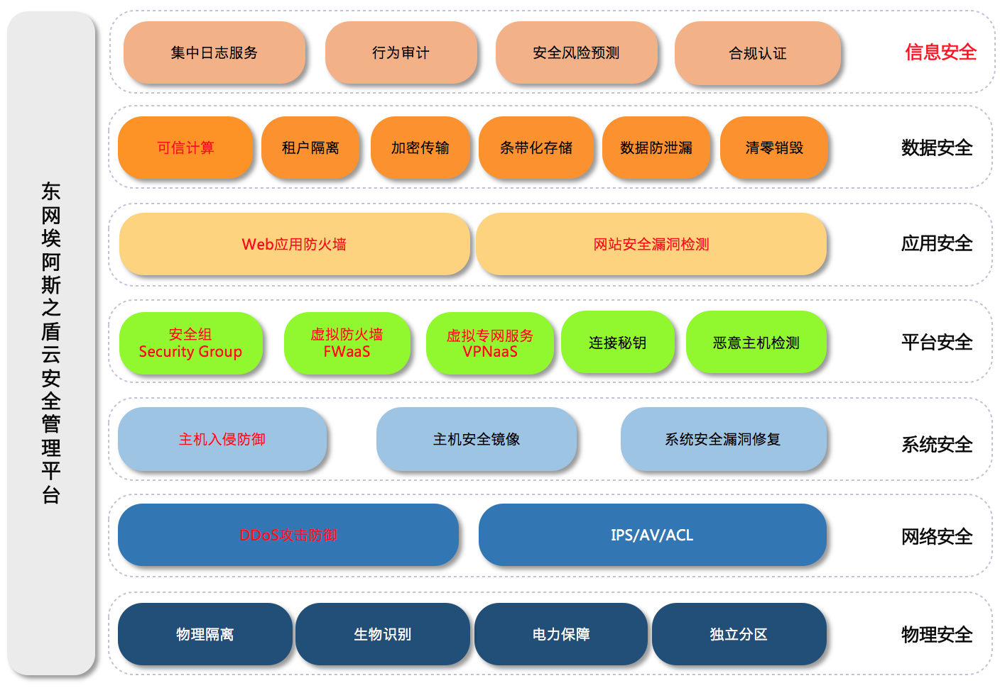
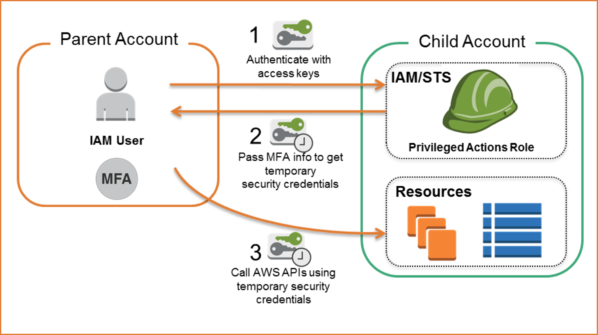
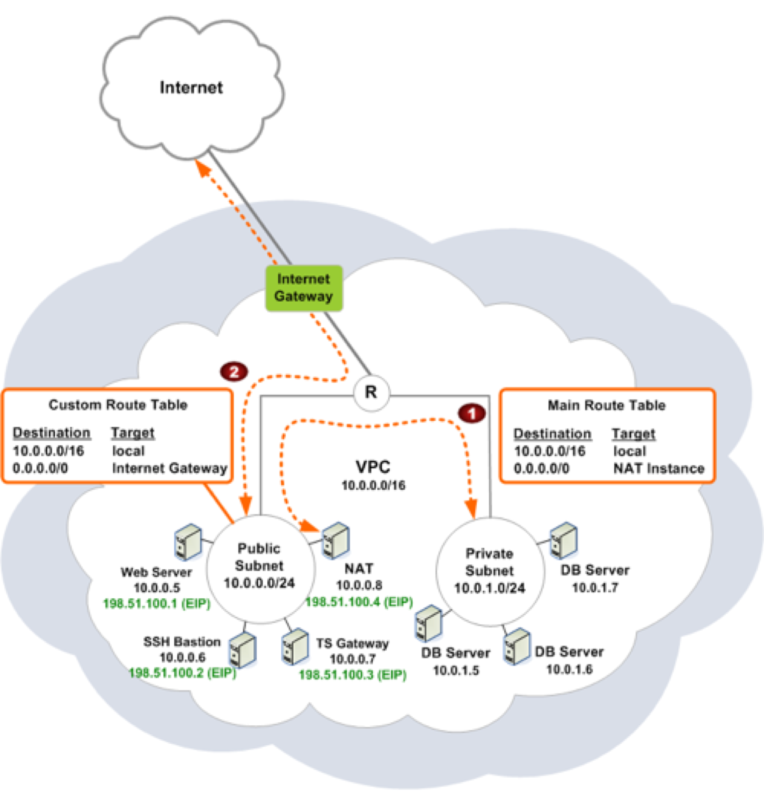
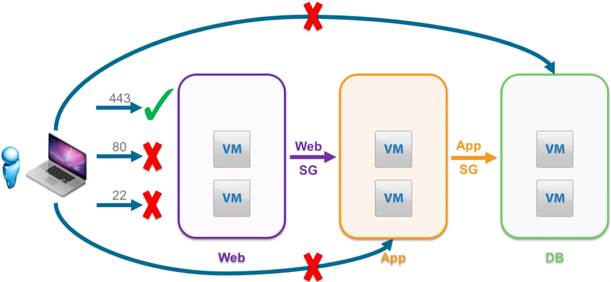
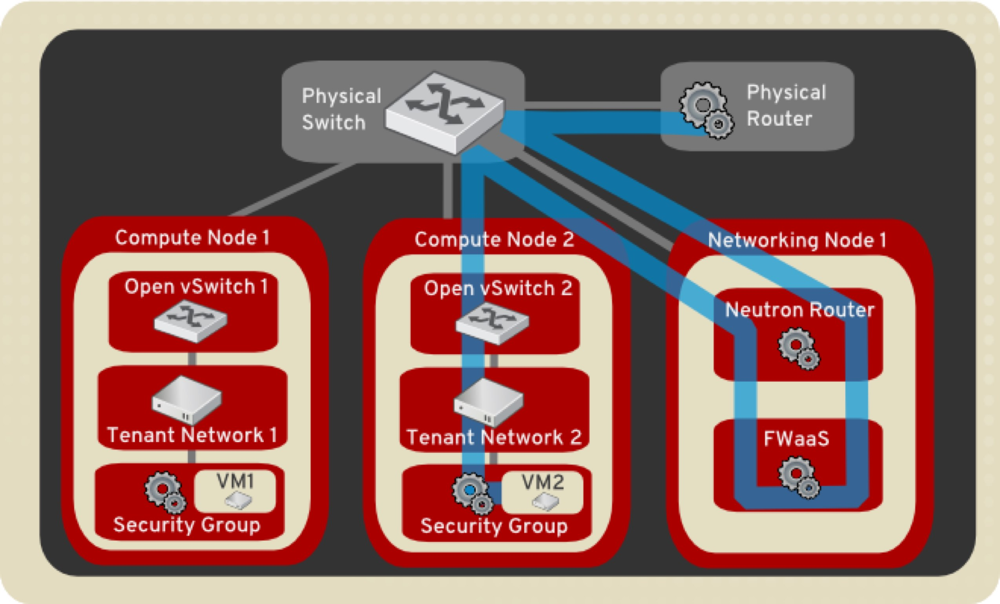
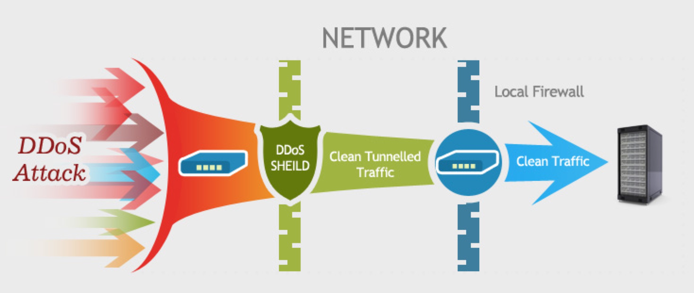
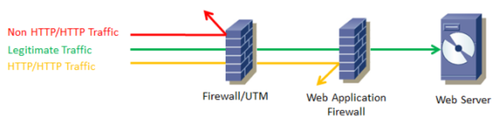
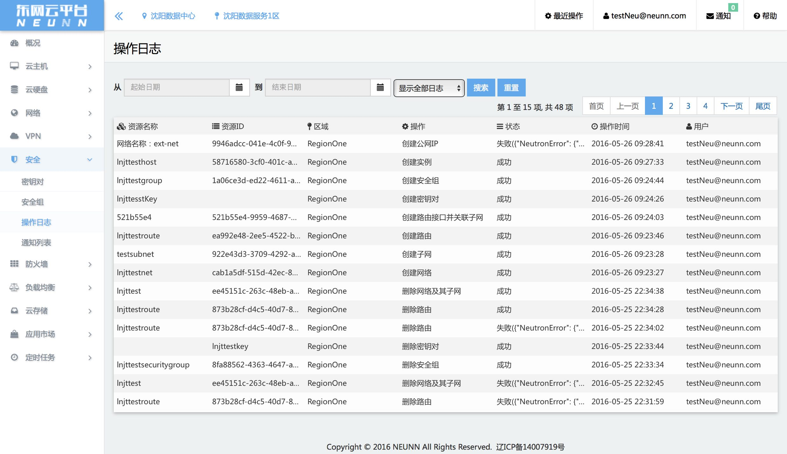
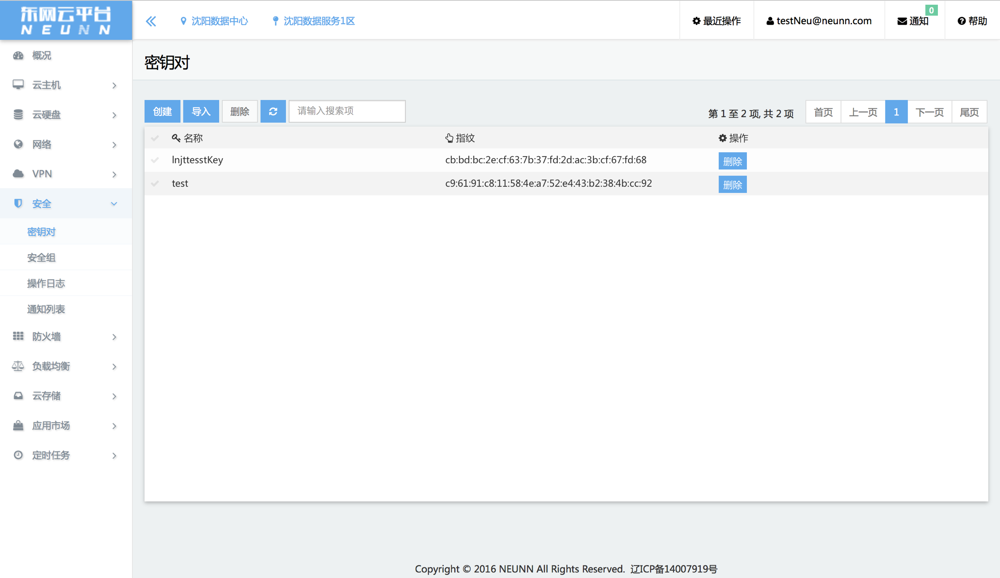

作者:崔远智
伴随着近些年云计算大潮的冲击和洗礼，以及大家对云的不断了解和接受，更多的应用和系统被逐渐的迁移并部署到了云端。迁移之后，云端的高可用性、弹性、高度的易用性等特点，都给用户带来了更多的方便和实惠。随之而来的，更多的安全问题，也不可避免的呈现在了我们的面前。那么今天，我们就针对云端的安全问题，做一些实践性的建议讨论。
对于用户而言，云安全其实更多的是在强调如何保证客户云上应用系统和服务的安全。
为了实现这个目标，需要从底至上的安全支撑，主要包括：基础设施物理安全 > 平台安全 > 应用安全 > 数据安全，等。
如下图所示，通用的安全体系可以划分为7层，包括：设备安全、网络安全、系统安全、平台安全、应用安全、数据安全、信息安全。

1.平台层以下(包括平台层本身)的安全性，是云服务提供商需要着重处理的。
2.用户在选择云服务提供商的时候，也需要重点考察和衡量其安全性，择优选用安全级别更高的云服务。
3.物理安全和网络安全，是云服务提供商需要首先考虑的两大主要因素，实现包括：物理设备隔离、网络隔离、分区规划、电力保障、DDosS防御、入侵检测、访问控制、流量控制(东西向＋南北向)、等。
4.系统安全主要包括主机层面的接入安全、密钥管理、补丁升级、漏洞防护、帐号管理、等。
5.平台安全主要涉及平台本身的设计层面是否充分考虑了安全因素、是否通过了比较严格的安全性测试和认证、是否能够提供客户需要的安全服务、等。
6.此外，云服务提供商是否配备专门的安全团队，来保障其安全性，也是一个非常重要的考虑因素。
1.作为用户，需要充分利用云服务提供商提供的安全服务，保障自己应用系统或服务的安全，这些安全服务包括：IAM、MFA、安全组、防火墙、密钥对、VPN、审计日志、等。
2.同时，用户需要利用云服务资源的一些特性，合理设计和部署，保护自己应用系统或服务的安全。主要可以利用的资源特性包括：自定义网络拓扑结构和访问控制、弹性公网IP和自定义路由策略、等。
3.应用系统或服务本身的安全设计，从本质上讲是与上云与否没有直接关系的，从任何角度看，即使不上云，这也是用户自身需要周期考虑和实现的，保障应用系统或服务本身不存在安全问题或漏洞。
4.数据安全和信息安全策略也是同样道理，类似密码密钥的管理规范，数据使用和保存的规范，不管上不上云，都是用户自身需要充分保障的。
1.IAM (Identity and Access Management) 是一种 Web 服务，可帮助您安全地控制用户对云端资源的访问权限。通过 IAM 可以控制哪些人可以使用您的云端资源（身份验证）以及他们可以使用的资源和采用的方式（授权）。
2.MFA (Multi-Factor Authentication) 是一种非常简便的最佳实践方法，它能够在用户名称和密码之外再额外增加一层保护。启用 MFA 后，用户登录云服务网站时，系统将要求他们输入用户名和密码（第一安全要素 – 用户已知），以及来自其 MFA 设备的身份验证代码（第二安全要素 – 用户已有）。这些多重要素结合起来将为您的云服务账户设置和资源提供更高的安全保护。

3.如果想了解更多，关于IAM，您可以参考AWS的官方文档：AWS Identity and Access Management；关于MFA，可以参考AWS的官方文档：Multi-Factor Authentication
1.使用云的最大好处之一，就是可以根据用户自己的需要，完全自定义二层网络，也就是我们常说的SDN。
2.用户可以吧不同的应用系统或服务部署在不同的网络中，通过设置路由策略等方式，实现访问控制、隔离、等。
3.配合防火墙、安全组等安全服务，则可以更加容易的实现内外网隔离和访问控制。

典型的安全组使用场景如下图所示。

用户可以根据需要设置按安全组、源目的IP、源目的端口、内外网访问等条件进行访问控制。
以常见的OpenStack体系为例，防火墙使用场景如下图所示。

用户开启防火墙服务以后，防火墙就成为了服务的必经入口，用户可以按照源目的IP、源目的端口等条件，像使用标准物理防火墙一样进行访问控制。
一般的云服务提供商，都会在网络出口处架设DDoS防护设备。
用户可以通过购买DDoS防护服务，有效的保护自身应用系统或服务。
DDoS设备根据DDoS策略中的学习规则发现流量，生成检测规则。而后，根据检测规则进行异常流量检测，并在检测到异常流量时生成过滤规则，阻止异常流量通过设备。

想了解更多关于DDoS的信息，您可以参考H3C的关于DDoS的文档介绍
WAF是Web Application Firewall的缩写，中文可以翻译成：网站应用防护系统。通过执行一系列针对HTTP/HTTPS的安全策略来专门为Web应用提供保护。
参考下侧示意图，和DDoS防护很像。

软件定义WAF与分布式WAF的思考。
审计日志，就不用多说了，它记录了用户账户下全部账号的所有详细操作记录。
当需要追溯问题或查找详细操作信息时，它就非常重要了。


关闭一切不必要端口。
开通VPN，只通过VPN访问方式管理资源。
Web应用开启Https。
用户与权限的严格管理，通过用户组来映射角色和权限。
… …
崔远智，现任东网科技有限公司云计算云计算研发部部长。主要从事云计算基础服务和应用领域的研究、开发工作，研究方向主要包括主机虚拟化技术、分布式存储技术、软件定义网络技术、容器技术、等。曾从事多年国内解决方案软件和欧美国际软件外包业务并赴美工作。发表过“基于实时控制的多路温度监测系统[J]”的学术论文，等。